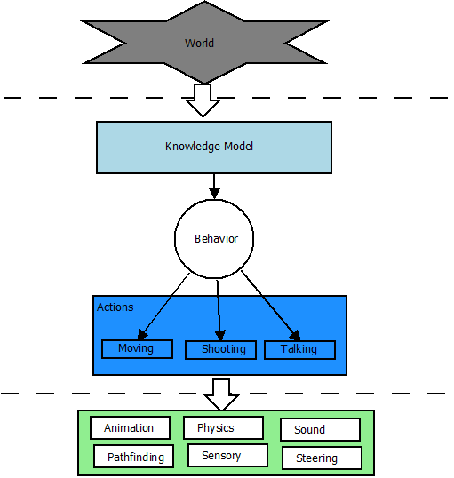

GameAI
Table of Contents
GameAI 相关的笔记
<!–more–>
GameAI
<!– more –>
开发游戏 AI 的目标之一就是要找到一个简单，可扩展的编辑逻辑的方案，从而加速游戏开发的迭代速度。在“行为系统图”中，行为系统（Behavior System）响应游戏中的各种信息，进行决策以挑选接下来将要执行的行动并且监控该行动的执行。

知识模型（Knowledge Model）是对游戏世界中各种信息的抽象。
FSM 有限状态机
Behavior Tree
行为树，英文是 Behavior Tree，简称 BT，是由行为节点组成的树状结构.
行为树和 FSM 比较
对于 FSM，每个节点表示一个状态，而对于 BT，每个节点表示一个行为。同样是由节点连接而成，BT 有什么优势呢？
在 BT 中，节点是有层次（Hierarchical）的，子节点由其父节点来控制。每个节点的执行都有一个结果（成功 Success，失败 Failure 或运行 Running），该节点的执行结果都由其父节点来管理，从而决定接下来做什么，父节点的类型决定了不同的控制类型。节点不需要维护向其他节点的转换，节点的模块性（Modularity）被大大增强了。实际上，在 BT 里，由于节点不再有转换，它们不再是状态（State），而是行为（Behavior）。
行为节点的执行状态
行为树是有很多种不同类型的行为节点组成的，但是这些不同类型的行为节点的执行状态是相同的，一共有如下的几种状态：
- Success 表示该行为节点执行成功
- Failure 表示该行为节点执行失败
- Running 表示执行结果还没确定，行为节点依然在运行中
行为节点
顺序节点(Sequence)
属于组合节点，顺序执行子节点，只要碰到一个子节点返回 false，则停止继续执行，并返回 false，否则返回 true，类似于程序中的逻辑与。
选择节点(Selector)
属于组合节点，顺序执行子节点，只要碰到一个子节点返回 true，则停止继续执行，并返回 true，否则返回 false，类似于程序中的逻辑或。
平行节点(Parallel Node)
属于组合节点，提供了平行的概念，无论子节点返回值是什么都会遍历所有子节点。所以不需要像 Selector/Sequence 那样预判哪个 Child Node 应摆前，哪个应摆后。Parallel Node 增加方便性的同时，也增加实现和维护复杂度。
条件节点(Condition)
属于叶子节点，判断条件是否成立。
执行节点(Action)
属于叶子节点，执行动作，一般返回 true。
AI Tools
APEX UTILITY AI http://apexgametools.com/products/apex-utility-ai-2/
behaviac http://www.behaviac.com/
参考资料
- 行为树的基本概念及进阶 http://www.behaviac.com/concepts/
- Behavior trees for AI: How they work http://www.gamasutra.com/blogs/ChrisSimpson/20140717/221339/Behavior_trees_for_AI_How_they_work.php
- 虚幻 4 行为树文档 https://docs.unrealengine.com/latest/CHN/Engine/AI/BehaviorTrees/index.html